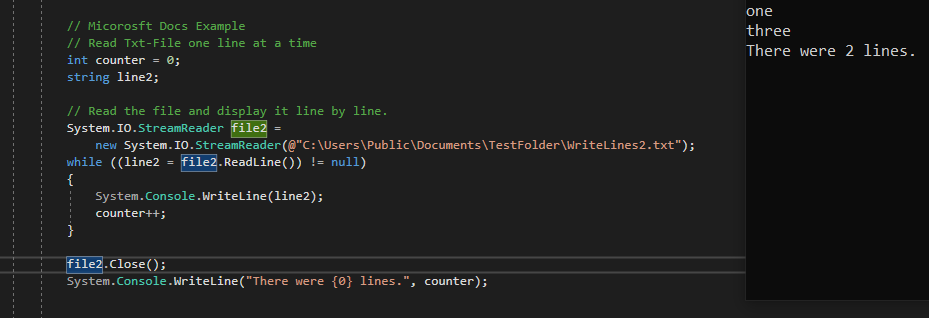

01 Klassen für den Dateizugriff
Im Folgenden eine Liste der Klassen für den Dateizugriff
- System.IO.FileInfo
- System.IO.DirectoryInfo
- System.IO.DriveInfo
- System.IO.Directory
- System.IO.File
Diese können als Objekt intanziiert werden, damit man Zugriff auf deren Member und Methoden erhält. Über DriveInfo erhält man z.B. Zugriff auf Directory, GetFiles und RootDirectory.
02 Mit Laufwerken, Ordnern und Dateien arbeiten
Hier einige Code Beispiele, mit denen man allgemeine Informationen des Laufwerks ausgeben kann.
Im folgenden Beispiel versuchen wir den Pfad einer Datei zu verändert und Dateien zu löschen (mit Exception Handling!).
War gar nicht mal so schwer, oder?
03 Mit Textdatei arbeiten
In den folgenen Beispielen wird gezeigt, wie man strings in eine Txt-Datei schreibt. Die benötigte Datei wird hierbei von selbst angelegt, sollte Sie noch nicht exisitieren. Zunächst schreiben wir ein Array aus strings in eine .txt Datei.
Anschließend schreiben wir eine string Variable in eine .txt (wer bis hierhin glaubte, es würde kein Witcher Beispiel verwendet werden lag falsch!).
Wir können auch einzelne strings eines string Arrays ausschließen
Abschließend wird gezeigt, wie man einen string zu einer bereits bestehenden Txt-Datei hinzufügt.
Abschließend wollen wir den Inhalt einer .txt auslesen und zur prüfung in der Console ausgeben.
Als nächstes wird der Inhalt einer .txt in ein string array eingelesen.
Zu guter letzt geben wir den inhalt des zweiten Txt-Files Zeilenweise aus: 
Das war unerwartet…
…einfach!
Quellen und weiterführende Links
01 https://docs.microsoft.com/de-de/dotnet/csharp/programming-guide/file-system/how-to-get-information-about-files-folders-and-drives
02 https://docs.microsoft.com/de-de/dotnet/csharp/programming-guide/file-system/how-to-copy-delete-and-move-files-and-folders
03 https://docs.microsoft.com/de-de/dotnet/csharp/programming-guide/file-system/how-to-write-to-a-text-file
https://docs.microsoft.com/de-de/dotnet/csharp/programming-guide/file-system/how-to-read-from-a-text-file
https://docs.microsoft.com/en-gb/dotnet/csharp/programming-guide/file-system/how-to-read-a-text-file-one-line-at-a-time